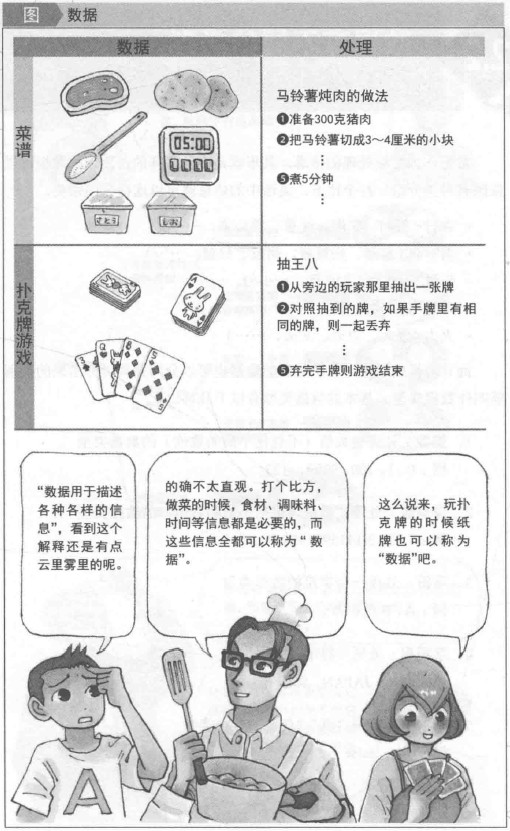
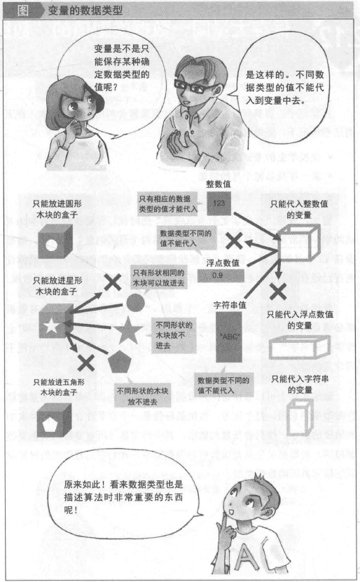
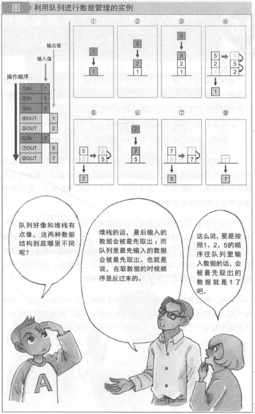

算法
什么是算法？
听到”算法（Algorithm）”这个词，大部分人都觉得好像艰深晦涩。的确，这不是一个常常听到的词。事实上，在数学、计算机等理工科领域，所谓的算法，指的就是“对特定问题解决的步骤”。而这里的特定问题，通常有：
- 对信息进行排序
- 搜索目标信息
等不同问题。
此外，如果说“算法是解决问题的步骤”，那么撇开计算机的数据处理不论，现实生活中也有很多问题的解决方法蕴含了算法的思想。这其中的代表就是菜谱。
算法的作用及意义？
算法是人类智慧的结晶，寻求更加优雅的解法。
在程序中应用算法。自计算机面世，在利用计算机解决各种各样的“问题”时，无数解法、步骤被人们提出来。“是不是更好地复用”、“是不是可以更高效”、“是不是可以花费更少的空间代价”等，很多研究者会从这些方面对现存的算法进行改善。而历经时间的洗练，那些优雅的算法正在被应用到各种计算机程序中去。
算法两个必要条件
“准确性”和“可停止性”
- 准确性：对相应的问题，算法必须能够得出正确的结果。证明算法准确性的其中一个方法是，“对于算法中的任意一个步骤，输入当前步骤满足条件的值，看看是否能得到当前步骤产生的准确的结果，以此细分并判断。”这种方法叫断言（Assertion） 。
- 可停止性：算法必须是最终可停止的。算法的可停止性也就是“保证无论什么样的输入，也一定可以在有限时间内正确的停止”。

算法分析
算法分析的目标是根据运行的时间及其他的一些因素（如内存、开发者的工作量等）来比较算法（或解决方案）的优劣。
为了比较算法，首先定义几个客观评价指标：
- 执行时间:它不是一个好的指标，因为执行时间与特定的计算机有关。
- 执行的语句数：它也不是一个很好的评价指标，因为执行的语句数和编程语言有关，也与程序猿个人的编程风格有关。
- 理想指标：假设用一个函数$f(n)$来表示一个算法的运行时间，该函数的输入参数就是问题的规模$n$。然后比较这些不同函数对应的运行时间。这种比较与机器时间、编程风格等无关。
常用的增长率
| 时间复杂度 | 名称 | 实例 |
|---|---|---|
| 1 | 常数 | 在链表的前端增加一个元素 |
| $logn$ | 对数 | 在有序数组中查找一个元素 |
| $n$ | 线性 | 在无序数组中查找一个元素 |
| $nlogn$ | 线性对数 | 通过分治，归并排序n个元素 |
| $n^2$ | 平方 | 求图中两个顶点之间的最短距离 |
| $n^3$ | 立方 | 矩阵乘法 |
| $2^n$ | 指数 | 汉诺塔问题的求解 |

分析的类型
算法分析有三种类型：
- 最坏情况
- 定义算法最长运行时间的输入。
- 这种输入使算法运行最慢。
- 最好情况
- 定义算法最短运行时间的输入。
- 这种输入使算法运行最快。
- 平均情况（期望）
- 提供算法运行时间的预测值。
对于一个给定的算法，可以用表达式来描述算法的最好、最坏和平均情况。例如，函数$f(n)$代表给定的算法。
$f(n)=n^2+500$,对应最坏情况
$f(n)=n+1000n+500$,对应最好情况
渐近表示
有了描述算法的最好、最坏和平均情况的三种表达式后，对每种表达式还需要确定算法的上界和下界。
大$O$表示法：给出了算法函数的严格上限。一般来说，它可以表示为$f(n)=O(g(n))$,这表示当输入规模$n$很大时，$f(n)$的上界时$g(n)$。例如，对于给定的算法$f(n)=n^4+100^2+10n+50$，那么$g(n)=n^4$。这意味着问题规模$n$的增大，$g(n)$决定了$f(n)$的最大增长率。
$\Omega$表示法：给出算法函数的严格的下界。它可以表示为$f(n)=\Omega(g(n))$。也就是说，当输入规模$n$增大时，$f(n)$的严格下界是$g(n)$。例如，$f(n)=1oon^2+10n+50$,$g(n)=\Omega(n^2)$
$\Theta$表示法：给定算法的时间增长率的上界和下界是否相同。算法的平均运行时间总是介于上界和下界之间。如果上界$(O)$和下界$\Omega(n)$给出的结果是一样的，那么$\Theta$也会得出相同的增长率；如果不同，需要分析所有可能的时间复杂度，然后得出平均情况下的结论。
重要说明
在分析最好、最坏和平均时间，试图给出算法的上界$(O)$、下界$(\Omega)$和平均时间$(\Theta)$。对于给定算法，得到它的上界$(O)$、下界$(\Omega)$和平均时间$(\Theta)$可能并不容易。
通常对于一个算法我们最关心的是算法时间复杂度的上界$(O)$，因为求下界$(\Omega)$没有实际意义。
渐近分布举例
有些通用的规则帮助我们确定一个算法的运行时间。
- 循环：一个循环体的运行时间最多为——循环体内语句的运行时间（包括循环条件判断）与迭代次数的乘积。
1 | // 循环执行n次 |
总时间$=c×n=cn=O(n)$
- 嵌套循环：从内到外进行分析。总的运行时间是所有循环规模的乘积。
1 | // 外层循环执行n次 |
总时间=$c×n×n=cn^2=O(n^2)$
- 顺序执行语句：每条语句的运行时间相加。
1 | x+=1;// 时间常熟 |
总时间=$c_{0}+c_{1}n+c_{2}n^2=O(n^2)$
- if-then-else条件语句：最坏的清下的运行时间为——条件判断的时间+最大值（then部分的语句运行时间或else部分的语句运行时间）。
1 | // 条件：常数 |
总时间=$c_{0}+c_{1}+(c_{2}+c_{3})×n^2=O(n^2)$
- 对数级时间复杂度：如果算法可以在常数时间把问题的规模按照某个分数（一般是1/2分解），那么该算法的复杂度为$O(logn)$。
1 | for (i=1;i<=n ; ) { |
数据结构
对于需要输入大量数据，处理并且输出结果的算法，在输入输出数据或者处理数据的过程中，需要高效地存储和处理各种各样大量的数据。
在某些情况下，正式因为采用了高效的存储和管理方式，才使得某些巧妙的算法实现成为可能。
数据
数据就是描述各种信息的载体。

数据类型
计算机编程中，算法处理的数据也可以分门别类。分出来的类别就叫做数据类型。
- 整数：处理整数值（不包括小数的数值）的数据类型。
- 浮点数：处理实数值（包括小数的数值）的数据类型。
- 字符：处理一个字符的数据类型。
- 字符串：处理字符串的数据类型。
- 布尔值：处理“真”和“伪”的数据类型。

变量
在算法中，要对数据进行操作，就需要一个容器。而这个容器就叫做“变量”。

变量的数据类型
决定可以带入变量的数据类型。
就像值一样，变量也有数据类型（整数型、浮点数、字符、字符串、布尔值等）。为变量指定类型，是为了确定“这个变量可以保存什么样的数据”。也就是说，并不是所有数据都可以代入的，从指定了数据类型起，变量就只能保存这种数据类型的值。

常用的变量名
在描述算法的时候，变量的使用是必需的。这些变量的命名，有一些通用的惯例。记住这些惯例可以帮助更好地理解算法。
- 循环处理中表示循环次数的变量
一般用i、j、k等变量名。 - 表示数组下边的变量
一般用index、idx等变量名。 - 计数用的变量
常用counter、count、cnt等 - 处理字符串的变量（或数组）
常用str、string等。
常用数据结构
数组
把同类数据紧密排列就得到“数组”。数据排列成一条直线的数组叫一维数组，数据像长方体一样排列的数据叫三维数组。
链表
“链表”和“数组”一样，在管理按顺序排列的数据的时候使用的数据结构。和数组不同的是，链表通过像结绳子一样的方式按顺序或者逆序管理前后关联的数据。
堆栈
“堆栈”对数据的管理方式就像堆积在桌子上的书本一样的数据。这种管理方式：取数据的顺序和存数据的顺序相反（“先进后出”）。
队列
“队列”对数据的管理方式就像是超市收银台前排的对一样，按照排队的先后顺序处理数据。也就是说，取数据和村数据的顺序是一致的（“先进先出”）。

树（树木的结构）
树可以从树干分出两三个枝干，从某一个枝干上又可以分出两三个枝干。像树木结构一样管理数据的数据结构就叫做“树”。